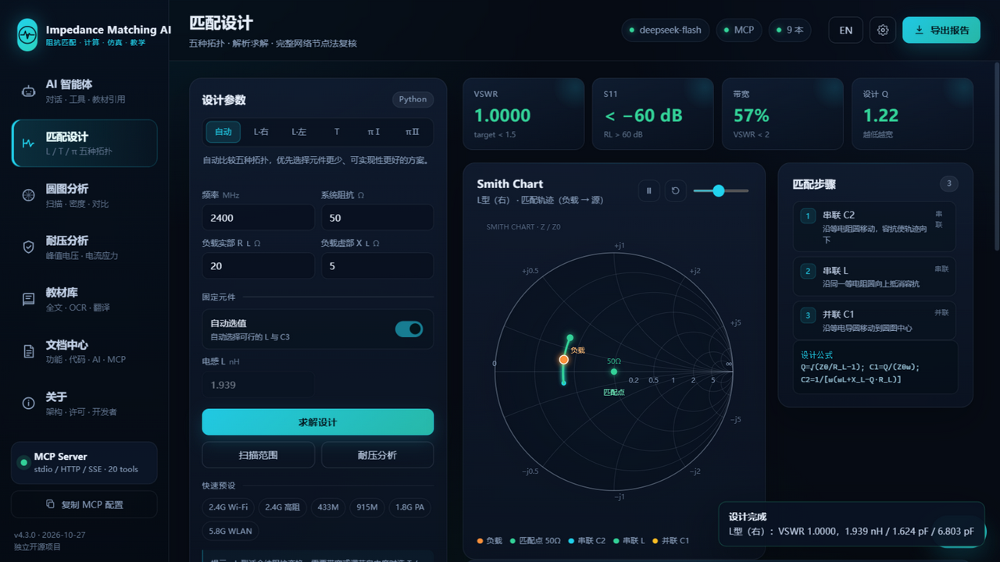
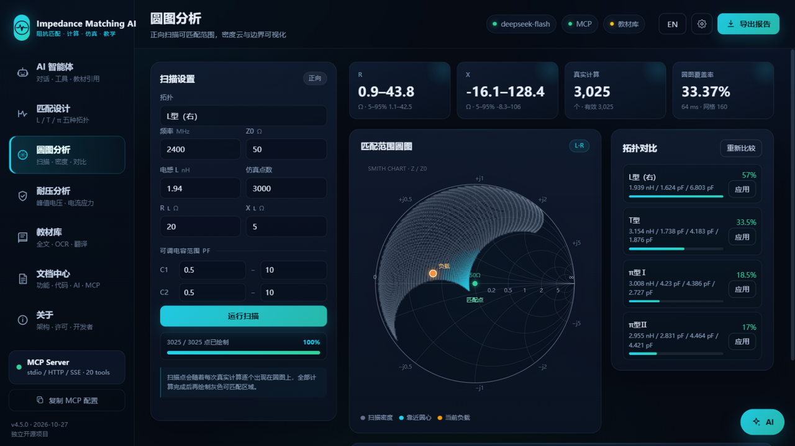
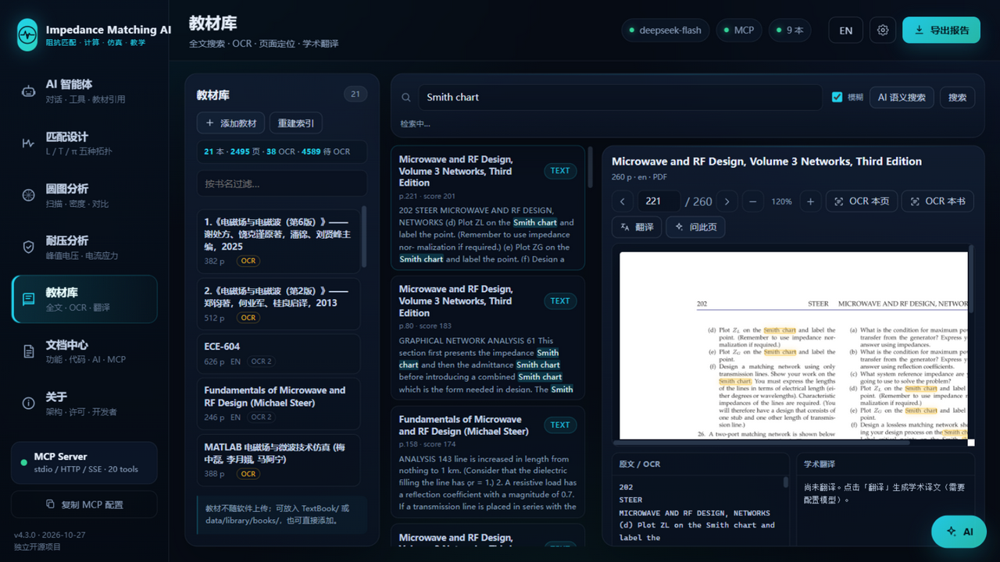
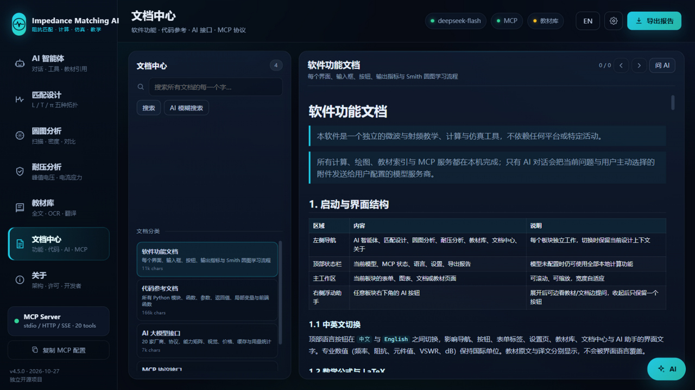
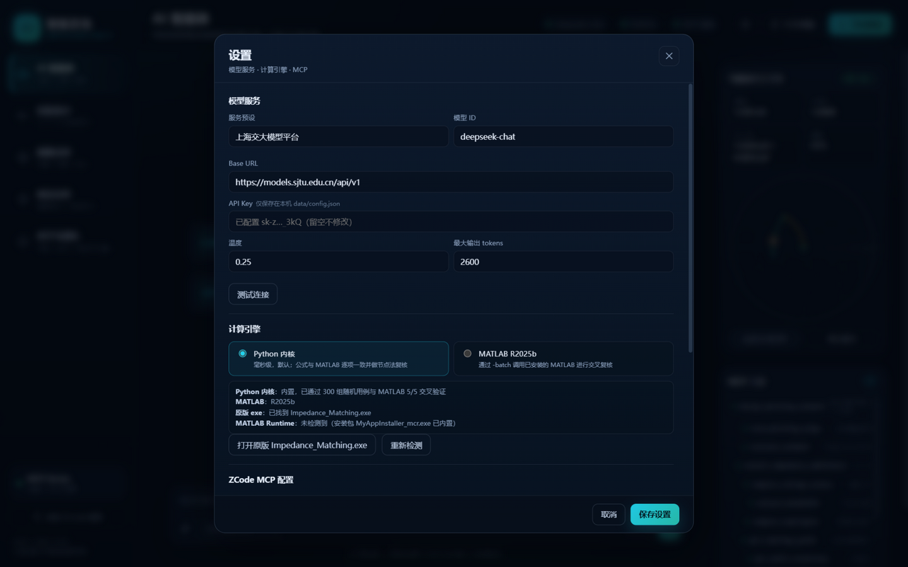

离线文档← 返回文档首页
Impedance Matching AI 离线说明书
v4.4.0 · 微波阻抗匹配、Smith 圆图、教材检索与 MCP 服务
本软件是独立开源项目，不绑定任何平台或活动。所有计算、绘图、教材索引与 MCP 服务都在本机完成；只有 AI 对话会把当前问题与用户主动选择的附件发送给用户配置的模型服务商。
文档分类
软件功能文档每个界面、输入框、按钮、输出指标与 Smith 圆图学习流程软件功能文档 (English)English edition代码参考文档模块、函数、参数、返回值、局部变量与前端函数代码参考文档 (English)English editionAI 大模型接口厂商、协议、能力矩阵、视觉、价格、缓存与用量AI 大模型接口 (English)English editionMCP 协议接口stdio / HTTP / SSE、工具 schema、资源与提示模板MCP 协议接口 (English)English edition教材库与数据库如何添加教材、OCR、数据库位置与备份安装与卸载安装路径、快捷方式、彻底卸载与数据清理界面截图





快速开始
- 双击
ImpedanceMatchingAI.exe打开软件。 - 在“设置 → 模型服务”中选择厂商、填写自己的 API Key；不配置模型也可使用全部本地计算。
- 在“教材库”点击“添加教材”，或把 PDF/DOCX/PPTX 放进
TextBook/。 - 在“文档中心”全文搜索本说明书，或使用右侧浮动 AI 边看边问。